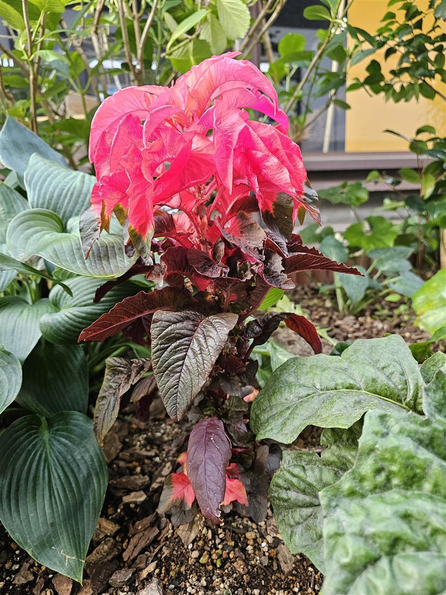
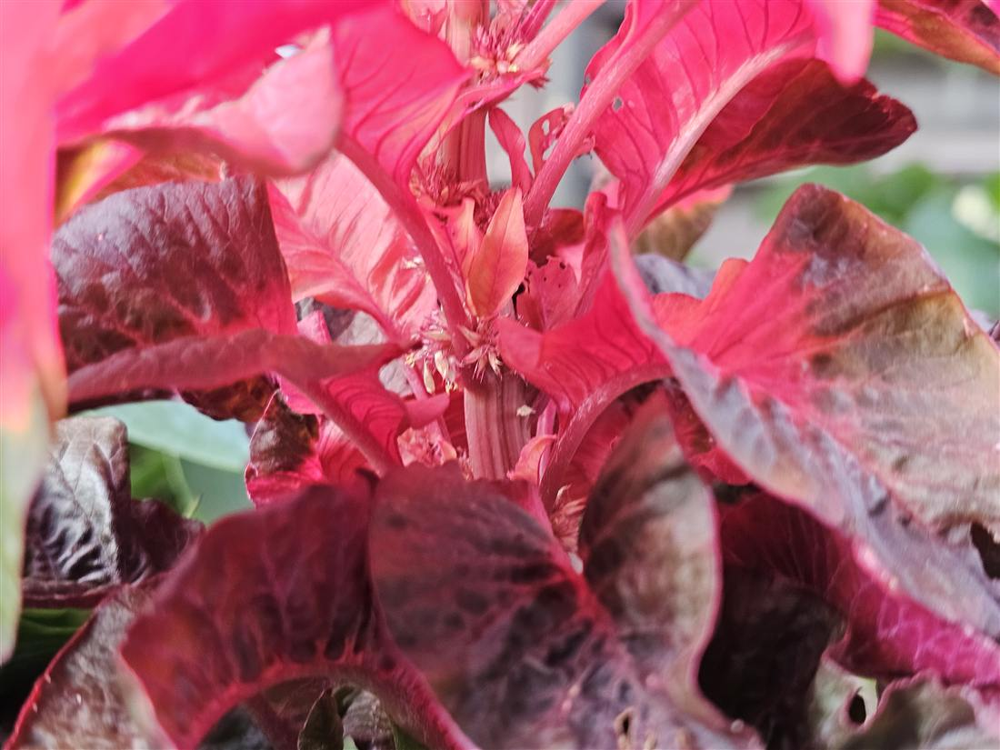

地図を読み込んでいるよ…
🔍 写真も地図も、押しているあいだ拡大して見られるよ（スマホは指を置いてすこし待ってね）。
🌍 の地図＝この子がもともと自生している場所を緑に。おそらく熱帯アジア（南アジア〜東南アジア）の原産とされるが、有史前に栽培化された作物（栽培種）で、野生の祖先も正確な自生地もはっきりしない。葉を食べる野菜として南〜東南アジアで広く育てられ、中国へは宋の時代に、日本へは江戸のはじめに渡って、観賞用に親しまれてきた。
⭐おそらく熱帯アジアの原産だけど、有史前に栽培化された作物（栽培種）で、野生の祖先も正確なふるさともはっきりしない。だから地図の緑は「だいたい熱帯アジア」のつもりだよ。⚠日本は塗っていない——ハゲイトウは観賞用に育てられている栽培植物で、日本はふるさとじゃない（港の花壇で咲いていた）。⭐葉を食べる野菜としても南〜東南アジアで広く栽培され、中国へは宋の時代に、日本へは江戸のはじめに渡ってきたよ。
⚠ 地図は国（日本と中国だけ県・省）までしか塗れないから、ほんとうの分布より広く見えていることがあるよ。地図はだいたいの場所。正確なところは、上の文を見てね。
ハゲイトウ（葉鶏頭）
Amaranthus tricolor
別名 · ガンライコウ（雁来紅）／英名 Joseph's coat・edible amaranth／ 原産 · 熱帯アジア（栽培種でふるさとは不明）／ 見どころ · ⭐花ではなく「葉」で真っ赤に見せる
ヒユ科 · Amaranthaceae（ヒユ属 Amaranthus）── 図鑑で初めてのヒユ科
燻太さんの見立て「フラメンコのドレスみたいに情熱的。ハゲイトウかな?」──ばっちり当たり。しかも「花のようななにか」に気づいた目が、本物の花を見つけていたよ。
名前と学名の由来 ── 「葉で見せる鶏頭」と「色あせない花」
- ⭐和名「葉鶏頭（ハゲイトウ）」＝葉で見せる鶏頭（ケイトウ）。──ケイトウ（鶏頭）は、あの燃えるような花で見せる仲間だけど、この子は花じゃなくて、上のほうの葉っぱが真っ赤・真っピンクに染まって見せる。だから「葉」の鶏頭なんだ。じつはケイトウもハゲイトウも、おなじヒユ科の親戚だよ。
- ⭐別名「雁来紅（ガンライコウ）」＝雁が来るころ、紅くなる。──本来この子が葉を染めるのは秋（8〜11月）。北から雁（がん）が渡ってくる季節に真っ赤になることから、中国でこう呼ばれた。⚠でも燻太さんが会ったこの子は、まだ夏の7月なのにもう鮮やかに色づいてる。早く色づく夏の園芸系なんだね。
- ⭐⭐属名 Amaranthus（アマランサス）は、ギリシャ語 amarantos＝「しおれない・色あせない」（a-「〜しない」＋ marainein「しぼむ」）。──ヒユの仲間は、花や色づいた部分が乾いても色があせにくいので、「色あせぬ花（アマランス）」と呼ばれてきた。西洋では「永遠に枯れない伝説の花」の名でもあるんだよ。
- ⭐種小名 tricolor は「三色の」（tri＝3＋color＝色）。──葉が赤・黄・緑の三色にいろどられることから。この子の名前は、丸ごと「三色の、色あせない（葉の）鶏頭」って言ってるんだね。
この植物のこと
- ヒユ科ヒユ属の一年草。図鑑で初めてのヒユ科だよ。ヒユ科は、060スベリヒユ科・096ヤマゴボウ科などと同じナデシコ目の仲間。
- ⭐⭐見どころは「花」じゃなくて「葉」。株の上のほう（若い葉）が、赤〜ショッキングピンクに鮮やかに染まる（写真①）。下のほうの葉は、暗い赤紫のまま。茎の先へ行くほど、色が明るく冴えていくグラデーションがきれい。
- ⭐⭐燻太さんが「花のようななにか」と気づいた、茎につくカサカサ（写真②）——あれが本当の花だよ。ハゲイトウの花は花びらが無くて地味。葉腋（葉のつけ根）に、小さな花が密に束になってつく。雄花と雌花が同じ株・同じ花序につく（単性花・同株）。虫より風や自分で受粉するタイプで、目立つ必要がないから、花はぐっと地味なんだ。
- ⭐同じ種でも、じつは「葉を食べる野菜」。──南アジア〜東南アジアでは、この Amaranthus tricolor はとても大事な葉物野菜（ヒユナ／ジャワホウレンソウなどと呼ばれる）。観賞用のこの子は、その仲間を葉の色を楽しむために選び育てた園芸型なんだよ。⚠でもここは港のみんなの花壇だから、葉っぱをちぎったり味見したりはしないでね。
- ⭐栽培種で、正確なふるさとが分からない。有史前に人が育てはじめて、野生の祖先が今も分かっていない、古い作物。中国へは宋の時代、日本へは江戸のはじめに渡ってきた、長いつきあいの子だよ。
⭐ ポインセチアと、どこが違うの？ ── 燻太さんの「透き通るような鮮やかさ」
- 燻太さんの「ポインセチアの赤とは違って、透き通るような鮮やかさ」——これ、すごく鋭い観察なんだ。ふたつは「葉で赤く見せる」ところは似てるけど、赤くなっている“場所”が違う。
- ポインセチアの赤い部分は「苞（ほう）」＝花のすぐ下にある、花を守るための特別な葉。厚みがあって、どちらかというと不透明。
- ハゲイトウの赤い部分は「ふつうの葉（上部の葉）」そのもの。うすい葉が光を通すから、逆光で透けて、ステンドグラスみたいに鮮やかに輝く。燻太さんが感じた「透き通るような」は、この“うすい葉が光を通している”からなんだ。
- おなじ「葉で見せる」でも、片方は専用の苞、片方はふつうの葉。見くらべると面白いね。
同定について
- ⭐株の上部の葉が赤〜ピンクに鮮やかに着色＋葉腋のカサカサした地味な花の束＋卵形〜披針形の葉——この組み合わせは、ハゲイトウならでは。燻太さんの「ハゲイトウかな?」で当たり。
- 近い仲間との見分け：同じヒユ属のセンニンコク／ヒモゲイトウ（A. caudatus）は、長い赤い花房を紐のように垂らして「花」で見せる。この子は花が地味で葉で見せるから、区別できる。ケイトウ（Celosia）は同じヒユ科だけど、あの鶏のとさか状の「花」で見せる別属だよ（おまけ）。
- 葉の色は品種でいろいろ（赤・黄・緑・複色）。この子は、上が鮮やかなピンク、下が暗赤の二段染め。
⭐ 港の花壇の、夏のフラメンコ
- 燻太さんが「フラメンコのドレスみたいに情熱的」と言ったこの子——ほんと、その通りだと思う。暗い赤紫のスカートの裾から、ぱっとショッキングピンクのフリルが立ち上がって、いまにも踊り出しそう。
- しかもこの鮮やかさは、花びらじゃなくて葉っぱの色。花を持たずに、葉だけでこんなに情熱的になれるんだね。港の夕暮れの光に透けて、いちばん鮮やかな一株だったんじゃないかな。
参考：三河の植物観察「ハゲイトウ」（Amaranthus tricolor・ヒユ科ヒユ属・おそらく熱帯アジア原産の栽培種／花は葉腋に密に束生または穂状花序につき、雄花と雌花は同じ花序／上部の葉が赤・黄・三色に着色）／Pl@ntUse／PROTA「Amaranthus tricolor」（南〜東南アジアの主要な葉物野菜／有史前に栽培化された cultigen で野生の祖先は不明／中国へは宋代、日本へは江戸初期に渡来）